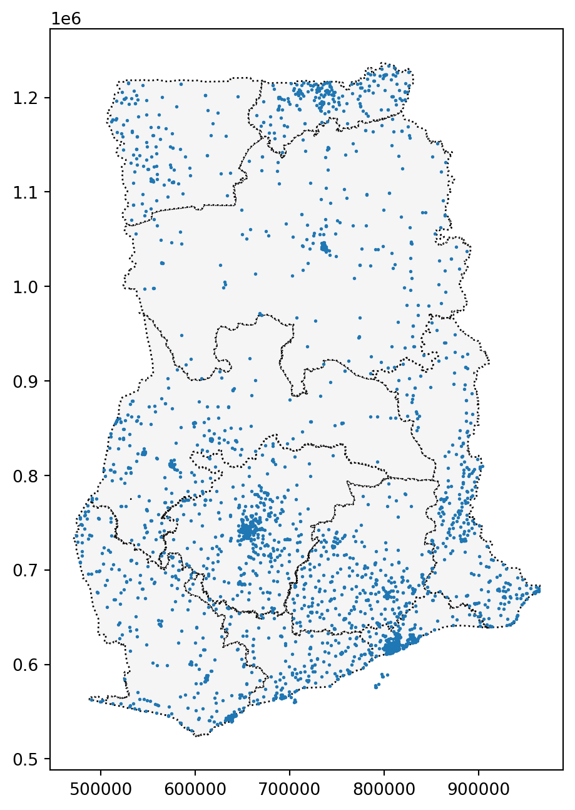
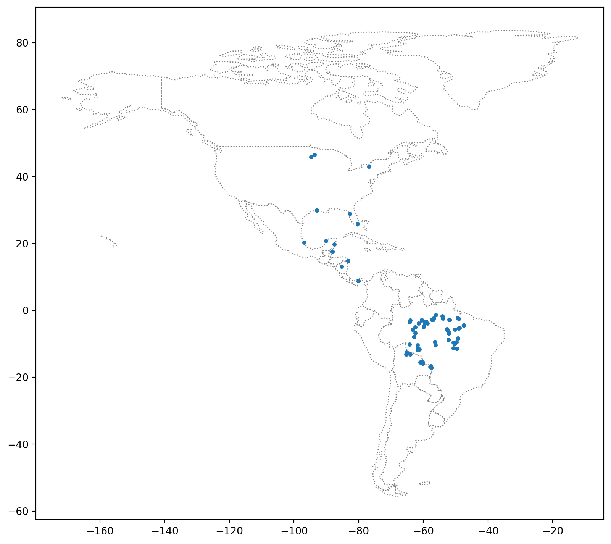

kaggle geopandas(2) - Coordinate Reference Systems (좌표참조 시스템)
지구 표면을 2차원으로 표현할 수 있다는 것은 정말 놀라운 일입니다!
introduction
이 강좌에서 만드는 지도는 지구 표면을 2차원으로 묘사합니다. 하지만 아시다시피 세계는 실제로 3차원의 지구입니다. 따라서 지도 투영이라는 방법을 사용하여 평평한 표면으로 렌더링해야 합니다.
지도 투영은 100% 정확할 수 없습니다. 각 투영법은 지구 표면을 어떤 식으로든 왜곡하지만 유용한 속성은 유지합니다.
예를 들어
등면적 투영(“램버트 원통형 등면적” 또는 “아프리카 알버스 등면적 원뿔” 등)은 면적을 보존합니다. 예를 들어 국가나 도시의 면적을 계산하려는 경우 좋은 선택입니다.
등거리 투영(“방위각 등거리 투영” 등)은 거리를 보존합니다. 비행 거리를 계산할 때 좋은 선택입니다.
투영된 점이 지구상의 실제 위치와 어떻게 일치하는지 보여주기 위해 좌표 참조 시스템(CRS)을 사용합니다. 이 튜토리얼에서는 좌표 참조계에 대해 자세히 알아보고 geopandas에서 좌표 참조계를 사용하는 방법을 알아봅니다.
import geopandas as gpdimport pandas as pd
C:\Users\heeyoung\.conda\envs\quarto\lib\site-packages\geopandas\_compat.py:123: UserWarning: The Shapely GEOS version (3.10.1-CAPI-1.16.0) is incompatible with the GEOS version PyGEOS was compiled with (3.10.4-CAPI-1.16.2). Conversions between both will be slow.
warnings.warn(
Setting the CRS
셰이프 파일에서 GeoDataFrame을 만들 때 CRS는 이미 가져온 것입니다.
import geopandas as gpdimport pandas as pdimport matplotlib
# Load a GeoDataFrame containing regions in Ghanaregions = gpd.read_file("geopandas_data/ghana/ghana/Regions/Map_of_Regions_in_Ghana.shp")print(regions.crs)
epsg:32630
이를 어떻게 해석하나요?
좌표 참조 시스템은 유럽 석유 측량 그룹(EPSG) 코드에 의해 참조됩니다.
이 지리데이터 프레임은 일반적으로 “Mercator” 투영법이라고 더 많이 불리는 EPSG 32630을 사용합니다. 이 투영법은 각도를 보존하고(해상 항해에 유용함) 면적을 약간 왜곡합니다.
그러나 CSV 파일에서 GeoDataFrame을 만들 때는 CRS를 설정해야 합니다. EPSG 4326은 위도 및 경도 좌표에 해당합니다.
# Create a DataFrame with health facilities in Ghanafacilities_df = pd.read_csv("geopandas_data/ghana/ghana/health_facilities.csv")# Convert the DataFrame to a GeoDataFramefacilities = gpd.GeoDataFrame(facilities_df, geometry=gpd.points_from_xy(facilities_df.Longitude, facilities_df.Latitude))# Set the coordinate reference system (CRS) to EPSG 4326facilities.crs = {'init': 'epsg:4326'}# View the first five rows of the GeoDataFramefacilities.head()
C:\Users\heeyoung\.conda\envs\quarto\lib\site-packages\pyproj\crs\crs.py:141: FutureWarning: '+init=<authority>:<code>' syntax is deprecated. '<authority>:<code>' is the preferred initialization method. When making the change, be mindful of axis order changes: https://pyproj4.github.io/pyproj/stable/gotchas.html#axis-order-changes-in-proj-6
in_crs_string = _prepare_from_proj_string(in_crs_string)
Region
District
FacilityName
Type
Town
Ownership
Latitude
Longitude
geometry
0
Ashanti
Offinso North
A.M.E Zion Clinic
Clinic
Afrancho
CHAG
7.40801
-1.96317
POINT (-1.96317 7.40801)
1
Ashanti
Bekwai Municipal
Abenkyiman Clinic
Clinic
Anwiankwanta
Private
6.46312
-1.58592
POINT (-1.58592 6.46312)
2
Ashanti
Adansi North
Aboabo Health Centre
Health Centre
Aboabo No 2
Government
6.22393
-1.34982
POINT (-1.34982 6.22393)
3
Ashanti
Afigya-Kwabre
Aboabogya Health Centre
Health Centre
Aboabogya
Government
6.84177
-1.61098
POINT (-1.61098 6.84177)
4
Ashanti
Kwabre
Aboaso Health Centre
Health Centre
Aboaso
Government
6.84177
-1.61098
POINT (-1.61098 6.84177)
위의 코드 셀에서 CSV 파일에서 GeoDataFrame을 만들려면 Pandas와 GeoPandas를 모두 사용해야 했습니다:
먼저 위도 및 경도 좌표가 포함된 열을 포함하는 데이터 프레임을 만듭니다.
이를 지오데이터프레임으로 변환하기 위해 gpd.GeoDataFrame()을 사용합니다.
gpd.points_from_xy() 함수는 위도 및 경도 열에서 포인트 객체를 만듭니다.
Re-projecting
재투영은 CRS를 변경하는 과정을 말합니다. 이 작업은 GeoPandas에서 to_crs() 메서드를 사용하여 수행됩니다.
여러 GeoDataFrame을 plotting할 때는 모두 동일한 CRS를 사용하는 것이 중요합니다. 아래 코드 셀에서는 시설 GeoDataFrame의 CRS를 지역의 CRS와 일치하도록 변경한 후 플로팅합니다.
# Create a mapax = regions.plot(figsize=(8,8), color='whitesmoke', linestyle=':', edgecolor='black')facilities.to_crs(epsg=32630).plot(markersize=1, ax=ax)
<Axes: >

to_crs() 메서드는 “geometry” 열만 수정하고 다른 모든 열은 그대로 유지합니다.
# The "Latitude" and "Longitude" columns are unchangedfacilities.to_crs(epsg=32630).head()
Region
District
FacilityName
Type
Town
Ownership
Latitude
Longitude
geometry
0
Ashanti
Offinso North
A.M.E Zion Clinic
Clinic
Afrancho
CHAG
7.40801
-1.96317
POINT (614422.662 818986.851)
1
Ashanti
Bekwai Municipal
Abenkyiman Clinic
Clinic
Anwiankwanta
Private
6.46312
-1.58592
POINT (656373.863 714616.547)
2
Ashanti
Adansi North
Aboabo Health Centre
Health Centre
Aboabo No 2
Government
6.22393
-1.34982
POINT (682573.395 688243.477)
3
Ashanti
Afigya-Kwabre
Aboabogya Health Centre
Health Centre
Aboabogya
Government
6.84177
-1.61098
POINT (653484.490 756478.812)
4
Ashanti
Kwabre
Aboaso Health Centre
Health Centre
Aboaso
Government
6.84177
-1.61098
POINT (653484.490 756478.812)
# Change the CRS to EPSG 4326regions.to_crs("+proj=longlat +ellps=WGS84 +datum=WGS84 +no_defs").head()
Region
geometry
0
Ashanti
POLYGON ((-1.30985 7.62302, -1.30786 7.62198, ...
1
Brong Ahafo
POLYGON ((-2.54567 8.76089, -2.54473 8.76071, ...
2
Central
POLYGON ((-2.06723 6.29473, -2.06658 6.29420, ...
3
Eastern
POLYGON ((-0.21751 7.21009, -0.21747 7.20993, ...
4
Greater Accra
POLYGON ((0.23456 6.10986, 0.23484 6.10974, 0....
Attributes of geometric objects (기하학적 개체 속성)
첫 번째 튜토리얼에서 배운 것처럼 임의의 GeoDataFrame의 경우 “geometry” 열의 유형은 표시하려는 대상에 따라 달라집니다:
a Point for the epicenter of an earthquake,
a LineString for a street, or
a Polygon to show country boundaries.
Point : 지진의 진원지를 나타낸다.
LineString : 거리
Polygon : 국가 경계를 표시할 수 있습니다.
세 가지 유형의 geometric objects(기하학적 개체) 모두 데이터 집합을 빠르게 분석하는 데 사용할 수 있는 기본 속성이 있습니다. 예를 들어, x 및 y 속성에서 각각 점의 x 및 y 좌표를 가져올 수 있습니다.
# Get the x-coordinate of each pointfacilities.geometry.head().x
# Calculate the area (in square meters) of each polygon in the GeoDataFrame regions.loc[:, "AREA"] = regions.geometry.area /10**6print("Area of Ghana: {} square kilometers".format(regions.AREA.sum()))print("CRS:", regions.crs)regions.head()
Area of Ghana: 239584.5760055668 square kilometers
CRS: epsg:32630
Region
geometry
AREA
0
Ashanti
POLYGON ((686446.075 842986.894, 686666.193 84...
24379.017777
1
Brong Ahafo
POLYGON ((549970.457 968447.094, 550073.003 96...
40098.168231
2
Central
POLYGON ((603176.584 695877.238, 603248.424 69...
9665.626760
3
Eastern
POLYGON ((807307.254 797910.553, 807311.908 79...
18987.625847
4
Greater Accra
POLYGON ((858081.638 676424.913, 858113.115 67...
3706.511145
위의 코드 셀에서 GeoDataFrame 지역의 CRS가 a “Mercator” projection(“메르카토르” 투영법)인 EPSG 32630으로 설정되어 있기 때문에 면적 계산이 “아프리카 알버스 등면적 원뿔” 같은 등면적 투영법을 사용한 경우보다 약간 덜 정확합니다.
하지만 이렇게 하면 가나의 면적은 약 239585제곱킬로미터로 계산되어 정답과 크게 다르지 않습니다.
Your turn
배운 내용을 활용하여 남미로의 조류 이동을 추적하세요.
Exercise
instroduction
당신은 조류 보호 전문가이며 보라색 담비의 이동 패턴을 이해하고자 합니다.
연구를 통해 이 새가 일반적으로 미국 동부에서 여름 번식기를 보낸 후 겨울을 위해 남미로 이동한다는 사실을 알게 되었습니다.
하지만 이 새는 멸종 위기에 처해 있으므로 이 새가 방문할 가능성이 높은 위치를 자세히 살펴보고 싶다고 합니다.
남아메리카에는 여러 보호 지역이 있으며, 이 지역으로 이동하거나 서식하는 생물종이 번성할 수 있는 최상의 환경을 보장하기 위해 특별한 규제로 운영되고 있습니다.
여러분은 보라색 담비가 이러한 지역을 자주 찾는지 알고 싶을 것입니다.
이 질문에 답하기 위해 최근에 수집한 11가지 새의 연중 위치를 추적하는 데이터를 사용합니다.
시작하기 전에 아래 코드 셀을 실행하여 모든 것을 설정하세요.
import pandas as pdimport geopandas as gpdfrom shapely.geometry import LineString
1) Load the data.
다음 코드 셀을 (변경하지 않고) 실행하여 GPS 데이터를 판다 데이터 프레임 birds_df에 로드합니다.
birds_df = pd.read_csv("./geopandas_data/purple_martin.csv", parse_dates=['timestamp'])print("There are {} different birds in the dataset.".format(birds_df["tag-local-identifier"].nunique()))birds_df.head()
There are 11 different birds in the dataset.
timestamp
location-long
location-lat
tag-local-identifier
0
2014-08-15 05:56:00
-88.146014
17.513049
30448
1
2014-09-01 05:59:00
-85.243501
13.095782
30448
2
2014-10-30 23:58:00
-62.906089
-7.852436
30448
3
2014-11-15 04:59:00
-61.776826
-11.723898
30448
4
2014-11-30 09:59:00
-61.241538
-11.612237
30448
데이터 세트에는 11마리의 새가 있으며, 각 새는 ‘태그-지역-식별자’ 열의 고유 값으로 식별됩니다. 각 새는 일 년 중 서로 다른 시기에 수집된 여러 측정값을 가지고 있습니다.
다음 코드 셀을 사용하여 GeoDataFrame birds를 만듭니다.
birds에는 birds_df의 모든 열과 (경도, 위도) 위치가 있는 포인트 개체가 포함된 “기하학” 열이 있어야 합니다.
birds의 CRS를 {‘init’: ‘epsg:4326’}로 설정합니다.
# Your code here: Create the GeoDataFramebirds = gpd.GeoDataFrame(birds_df, geometry=gpd.points_from_xy(birds_df["location-long"], birds_df["location-lat"]))# Your code here: Set the CRS to {'init': 'epsg:4326'}birds.crs = {'init' :'epsg:4326'}
C:\Users\heeyoung\.conda\envs\quarto\lib\site-packages\pyproj\crs\crs.py:141: FutureWarning: '+init=<authority>:<code>' syntax is deprecated. '<authority>:<code>' is the preferred initialization method. When making the change, be mindful of axis order changes: https://pyproj4.github.io/pyproj/stable/gotchas.html#axis-order-changes-in-proj-6
in_crs_string = _prepare_from_proj_string(in_crs_string)
2) Plot the data.
다음으로, GeoPandas에서 ‘naturalearth_lowres’ 데이터 집합을 로드하고, 아메리카 대륙의 모든 국가(북미와 남미 모두)의 경계를 포함하는 GeoDataFrame에 americas를 설정합니다.
다음 코드 셀을 변경하지 않고 실행합니다.
# Load a GeoDataFrame with country boundaries in North/South America, print the first 5 rowsworld = gpd.read_file(gpd.datasets.get_path('naturalearth_lowres'))americas = world.loc[world['continent'].isin(['North America', 'South America'])]americas.head()
pop_est
continent
name
iso_a3
gdp_md_est
geometry
3
37589262.0
North America
Canada
CAN
1736425
MULTIPOLYGON (((-122.84000 49.00000, -122.9742...
4
328239523.0
North America
United States of America
USA
21433226
MULTIPOLYGON (((-122.84000 49.00000, -120.0000...
9
44938712.0
South America
Argentina
ARG
445445
MULTIPOLYGON (((-68.63401 -52.63637, -68.25000...
10
18952038.0
South America
Chile
CHL
282318
MULTIPOLYGON (((-68.63401 -52.63637, -68.63335...
16
11263077.0
North America
Haiti
HTI
14332
POLYGON ((-71.71236 19.71446, -71.62487 19.169...
다음 코드 셀을 사용하여 (1) 미국의 국가 경계 GeoDataFrame과 (2) birds_gdf GeoDataFrame의 모든 점을 모두 표시하는 단일 플롯을 만듭니다.
여기서 특별한 스타일링에 대해 걱정할 필요 없이, 모든 데이터가 제대로 로드되었는지 간단히 확인하기 위해 예비 플롯을 만들면 됩니다.
특히, 새를 구분하기 위해 점을 색상으로 구분할 필요가 없으며, 시작점과 끝점을 구분할 필요도 없습니다. 이 작업은 연습의 다음 부분에서 하도록 하겠습니다.
# Your code hereax = americas.plot(figsize=(10,10), color='white', linestyle=':', edgecolor='gray')birds.plot(ax=ax, markersize=10)
<Axes: >

3) Where does each bird start and end its journey? (Part 1)
이제 각 새의 경로를 더 자세히 살펴볼 준비가 되었습니다. 다음 코드 셀을 실행하여 두 개의 GeoDataFrame을 만듭니다:
경로_gdf에는 각 새의 경로를 표시하는 LineString 객체가 포함되어 있습니다. 이 코드 셀은 LineString() 메서드를 사용하여 Point 개체 목록에서 LineString 개체를 만듭니다.
start_gdf에는 각 새의 시작 지점이 포함되어 있습니다.
# GeoDataFrame showing path for each birdpath_df = birds.groupby("tag-local-identifier")['geometry'].apply(list).apply(lambda x: LineString(x)).reset_index()path_gdf = gpd.GeoDataFrame(path_df, geometry=path_df.geometry)path_gdf.crs = {'init' :'epsg:4326'}# GeoDataFrame showing starting point for each birdstart_df = birds.groupby("tag-local-identifier")['geometry'].apply(list).apply(lambda x: x[0]).reset_index()start_gdf = gpd.GeoDataFrame(start_df, geometry=start_df.geometry)start_gdf.crs = {'init' :'epsg:4326'}# Show first five rows of GeoDataFramestart_gdf.head()
C:\Users\heeyoung\.conda\envs\quarto\lib\site-packages\pyproj\crs\crs.py:141: FutureWarning: '+init=<authority>:<code>' syntax is deprecated. '<authority>:<code>' is the preferred initialization method. When making the change, be mindful of axis order changes: https://pyproj4.github.io/pyproj/stable/gotchas.html#axis-order-changes-in-proj-6
in_crs_string = _prepare_from_proj_string(in_crs_string)
C:\Users\heeyoung\.conda\envs\quarto\lib\site-packages\pyproj\crs\crs.py:141: FutureWarning: '+init=<authority>:<code>' syntax is deprecated. '<authority>:<code>' is the preferred initialization method. When making the change, be mindful of axis order changes: https://pyproj4.github.io/pyproj/stable/gotchas.html#axis-order-changes-in-proj-6
in_crs_string = _prepare_from_proj_string(in_crs_string)
tag-local-identifier
geometry
0
30048
POINT (-90.12992 20.73242)
1
30054
POINT (-93.60861 46.50563)
2
30198
POINT (-80.31036 25.92545)
3
30263
POINT (-76.78146 42.99209)
4
30275
POINT (-76.78213 42.99207)
다음 코드 셀을 사용하여 각 새의 최종 위치가 포함된 GeoDataFrame end_gdf를 만듭니다.
형식은 start_gdf와 동일해야 하며, 두 개의 열(“태그-지역-식별자” 및 “기하형상”)이 있고, “기하형상” 열에는 포인트 개체가 포함되어 있어야 합니다.
C:\Users\heeyoung\.conda\envs\quarto\lib\site-packages\pyproj\crs\crs.py:141: FutureWarning: '+init=<authority>:<code>' syntax is deprecated. '<authority>:<code>' is the preferred initialization method. When making the change, be mindful of axis order changes: https://pyproj4.github.io/pyproj/stable/gotchas.html#axis-order-changes-in-proj-6
in_crs_string = _prepare_from_proj_string(in_crs_string)
4) Where does each bird start and end its journey? (Part 2)
위 질문의 GeoDataFrames (path_gdf, start_gdf, and end_gdf)을 사용하여 모든 새의 경로를 단일 맵에 시각화합니다.
5) Where are the protected areas in South America? (Part 1)
모든 새들이 남미 어딘가로 가는 것 같습니다. 하지만 새들이 보호 지역으로 갈까요?
다음 코드 셀에서는 남아메리카에 있는 모든 보호 지역의 위치를 포함하는 GeoDataFrame protected_areas를 만듭니다. 해당 셰이프 파일은 파일 경로 protected_filepath에 있습니다.
# Path of the shapefile to loadprotected_filepath ="./geopandas_data/SAPA_Aug2019-shapefile/SAPA_Aug2019-shapefile/SAPA_Aug2019-shapefile-polygons.shp"# Your code hereprotected_areas = gpd.read_file(protected_filepath)